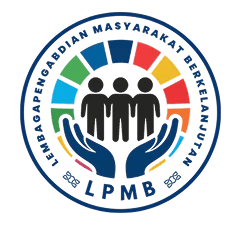
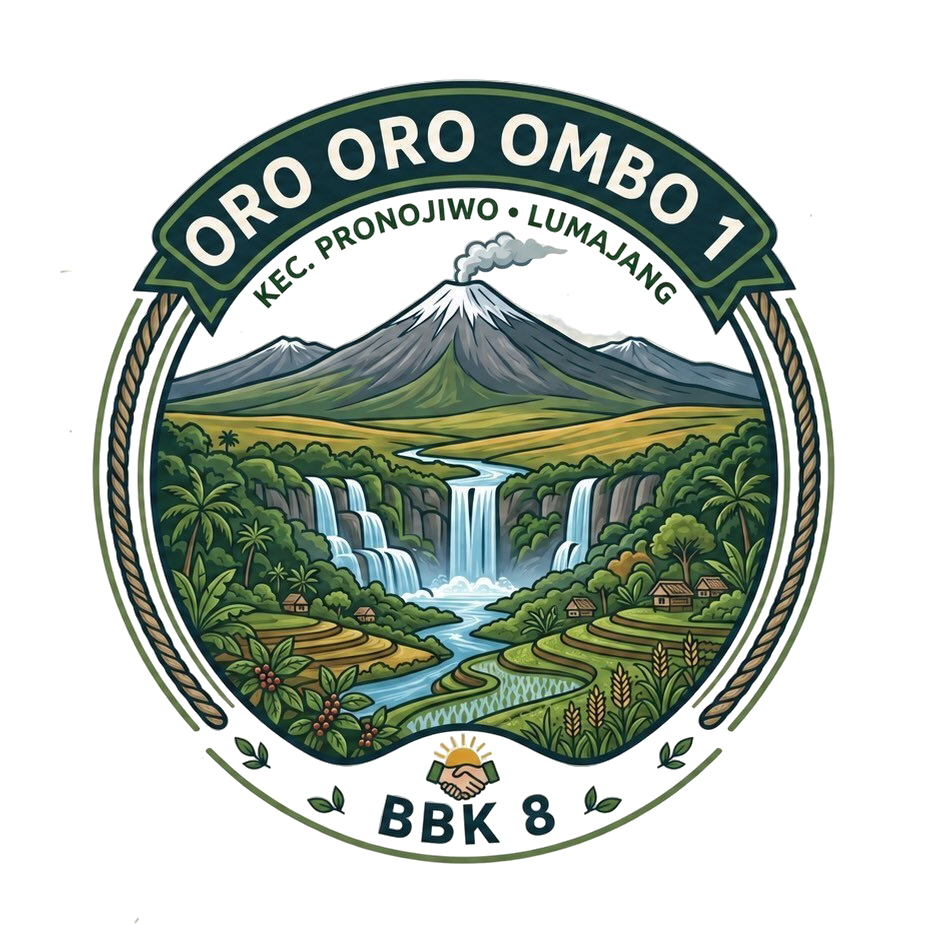

Asesmen Minat dan Bakat
Data Diri Peserta
Silakan lengkapi data diri Anda sebelum memulai pengerjaan tes.
Instruksi: Pilih 10-20 pernyataan YANG PALING SESUAI dengan dirimu.
Terpilih: 0 (Minimal 10, Maksimal 20)
Tahap 2: Pilih TEPAT 7 pernyataan yang merupakan Kekuatan Utama Anda.
Terpilih: 0 (Tidak Boleh Kurang maupun Lebih dari 7 )
Tahap 3: Pilih TEPAT 5 yang PALING TIDAK SESUAI dengan Anda.
Terpilih: 0 (Tidak Boleh Kurang maupun Lebih dari 5)
Laporan Hasil Asesmen
| Nama | : - |
|---|---|
| Kelas | : - |
| Asal Sekolah | : - |
Peta Potensi Minat Bakat (Berdasarkan ST-30)
Keterangan Warna:
Merah: Sangat Sesuai (Kekuatan Utama)
Kuning: Sesuai (Potensi Pendukung)
Putih: Netral
Hitam: Keterbatasan (Sangat Tidak Sesuai)
KEKUATAN UTAMA
AREA KETERBATASAN
Rekomendasi Sekolah Lanjutan
Berdasarkan kekuatan dominanmu, berikut adalah rekomendasi jurusan lanjutan yang paling sesuai agar potensimu berkembang maksimal:
Perhatian: Aplikasi ini dikembangkan secara independen untuk kegiatan sosial KKN BBK 8 Oro-Oro Ombo 1 UNAIR.
Instrumen, tipologi, dan visualisasi pemetaan diadaptasi dari ST-30 hak cipta Talents Mapping®. Tidak untuk dikomersialkan.